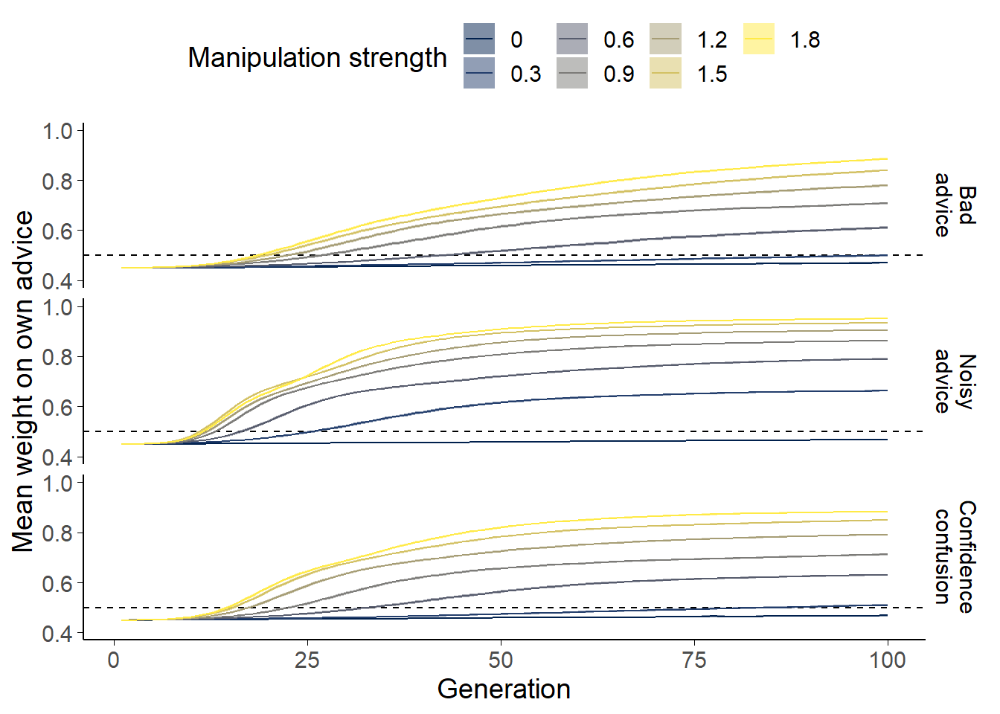

6 Sensitivity of advice-taking to context
Advice-taking is often overly-conservative as compared to the normative level of advice-taking for a given experimental design. I argue that participants’ performances in advice-taking experiments reflect both the specifics of the experimental design and prior expectations about advice-taking situations. Demonstrating the existence of prior expectations is difficult, because they are beyond the bounds of any task, but we aim instead to demonstrate that they are adaptive in terms of fitness as revealed by evolutionary pressure. Using computational agent-based evolutionary simulations, we demonstrate in this chapter that conservatism can emerge within a population even where detrimental advice is rarely experienced, and can even emerge where individuals always interact in good faith.
As discussed in the previous chapter§5, conservatism is optimal under some circumstances, and thus we expect that simulated agents allowed to evolve an advice-taking policy in those circumstances will evolve a conservative policy. We explored this tendency as a function of three plausible scenarios. The first scenario§6.2 is one in which agents occasionally give deliberately poor advice to their advisee, which represents situations where advisors’ interests may sometimes be contrary to judges’ interests, unbeknownst to the judges. In the second scenario§6.3, advice is simply noisier than the judge’s own initial estimate, either because the judge is less competent at the task, less willing to exert the required effort for the task, or because the advice is communicated imperfectly. In the third scenario§6.4, agents belong to either a ‘cautious’ or a ‘confident’ group in how they express and interpret advice, which is a simple analogue of the observation that people’s expressions of confidence are idiosyncratic (Ais et al. 2016; Navajas et al. 2017). In each of these three scenarios, we hypothesised that some level of egocentric discounting will emerge as the dominant strategy, i.e., the mean population weighting for an agent’s initial estimates versus advice they receive will be greater than .50.
6.1 General method
Agent-based computational models of an evolutionary process were programmed in R (R Core Team 2018) and run variously on a desktop computer and the Oxford Advanced Research Computing cluster (Richards 2015). The code is available at https://github.com/oxacclab/EvoEgoBias (Jaquiery 2021d), and a cached version of the specific data presented below are available to allow inspection without rerunning the models completely (Jaquiery 2021a).
The models reported here use 100 generations of 1000 agents which each make 60 decisions in each generation on which they receive the advice of another agent. Each scenario is run with 7 different strengths of the manipulation value, and each of these instances is run 50 times. Decisions are either point estimation (Scenarios 1§6.2 and 2§6.3) or categorical decision with confidence (Scenario 3§6.4). Each agent combines their own initial estimate with the advice of another agent, with the relative weights of the initial estimate and advice set by the agent’s egocentric bias parameter, to produce a final decision. Final decisions are evaluated by comparison with the objective answer, and an agent’s fitness is the sum of its performance over the 60 decisions of its lifetime.
6.1.1 Initial estimates
The agents perform a value estimation (category estimation in Scenario 3) task. Agent \(a\)’s initial estimate \(t\) is the true value (\(v_t\)), plus some noise drawn from a normal distribution with mean 0 and standard deviation equal to the agent’s (in)sensitivity parameter (\(s^a\), which is itself drawn from a normal distribution with mean and standard deviation 1 when the agent is created, and clamped to a minimum value of 0.1).
An agent’s initial estimate (\(i^a_t\)) is thus:
\[\begin{align} i^a_t = v_t + N(0, s^a) \tag{6.1} \end{align}\]
This structure is the same as in the normative model of advice-taking§1.1.5 presented in Equation . The normally distributed error terms cancel out on average over multiple estimates. Where \(s^a\) and \(s^{a'}\) (an advisor’s sensitivity) are equal or unknown (as in these simulations) the normative model indicates that the best strategy is to average these values.
6.1.2 Advice
Each agent receives advice from another agent which it combines with its initial estimate to reach a final decision. Each agent is reciprocally connected to 10 other agents at random when they are spawned, and on each decision they receive advice from one of their connections at random.18 The advice has a probability of being mutated in some fashion. The mutation depends upon the scenario and is described separately for each.
6.1.3 Final decisions
In the basic model from which other models inherit their decision procedure, agent \(a\) produces a final decision \(t\) as the average of the agent’s initial estimate (\(i^a_t\)) and another agent’s advice (\(i^{a,a'}_t\)), weighted by the agent’s egocentric bias (\(w^a\)). The models typically change the value of \(i^{a,a'}_t\), which is typically a function the initial estimate of some other agent (\(i^{a'}_t\)).
An agent’s final decision (\(f^a_t\)) is thus:
\[\begin{align} f^a_t = i^a_t \cdot w^a + i^{a,a'}_t \cdot (1 - w^a) \tag{6.2} \end{align}\]
The final decisions in Scenario 3§6.4 are more complex, but follow a similar structure.
6.1.4 Reproduction
After their 60 decisions are up, agents reproduce and then die, creating a new generation that will perform their 60 decisions and reproduce, and so on. Reproduction favours those agents who performed better on their 60 decisions, and each newly created agent has a small chance to mutate slightly.
Roulette wheel selection is used to bias reproduction in favour of agents performing best on the decisions. Performance is determined by a fitness function which differs slightly between categorical and continuous decisions. For scenarios 1§6.2 and 2§6.3, which use continuous decisions, this fitness is obtained by subtracting the absolute difference between the final decision and the true value for each decision (mean absolute deviance):
\[\begin{align} u^a = - \sum^{60}_{t=1} |v_t - f_t^a| \tag{6.3} \end{align}\]
Scenario 3§6.4 uses categorical decisions. These are processed using a fitness function that awards agents -1 point for each incorrect categorisation of the true world value.
The selection algorithm proceeds as follows: The worst performance is subtracted from each agent’s fitness and 1 added to put fitness scores in a positive range. Each agent is then given a probability to reproduce equal to their share of the sum of all fitness scores:
\[\begin{align} p^a = \frac{u^a}{\sum_{j=1}^{n}u^j} \tag{6.4} \end{align}\]
where \(n\) is the number of agents and \(u\) has undergone the transformations described above.
Reproducing agents pass on their egocentric bias to their offspring. When spawned this way, each agent has a 1% chance to mutate slightly, taking instead a value sampled from a normal distribution around its parent’s egocentric bias with a standard deviation of .1. All other agent features, decision-making accuracy, neighbours, and confidence scaling (in Scenario 3§6.4) are randomised when they are created.
In the present simulations, agents receive no feedback on decisions, and cannot learn about or discriminate between their advisors. The key outcome of interest in each simulation is whether the population evolves towards egocentric discounting (higher \(w^a\)) as the dominant adaptive strategy.
6.2 Scenario 1: misleading advice

Figure 6.1: Egocentric discounting simulation results.
The mean weight on agents’ own advice is shown averaged across 50 runs of each scenario at each manipulation strength. The width of the ribbons shows the mean 95% confidence intervals for the population self weights over the 50 runs. The dashed line shows equal weighting (.5), the mathematically optimal value for integrating a single estimate from an advisor of equivalent ability to oneself.
In scenario 1, advisors sometimes offer misleading advice.
6.2.1 Method
The true value (\(v_t\)) is fixed at 50 in this scenario. The agents do not learn about the true value over time, so a fixed and arbitrary value does not alter the results of the simulation.
Advice in this scenario is either the advising agent’s initial estimate (\(i^{a'}_t\)), or an extreme answer in the opposite direction to the advising agent’s initial estimate (i.e. lower than 50 if \(i^{a'}_t\) was above 50, and vice-versa). The probability of extreme advice is \(x\)%, where \(x\) is the manipulation value for the simulation. If an agent gives extreme advice they add 3 standard deviations of their own sensitivity to the answer they would otherwise give.
6.2.2 Results
Figure 6.1 (top) shows the results of 350 simulations (50 at each level of bad advice frequency). The starting value of self-weight in all simulations is set to .45 so that evolution should still occur in the absence of a manipulation towards the optimum level of self-weight in that case (.5). The evolutionary pressure in the absence of a manipulation is quite low, so over the 100 generations modelled the mean self-weight in simulations without a manipulation barely moves towards .5. Longer simulations show that the population does evolve to and remains at the optimum value of .5 in the manipulation-free cases.
Where advice is sometimes misleading, egocentric discounting emerges rapidly. In longer simulations, this value remains stable throughout the rest of the stimulation. The greater the probability of misleading advice, the more rapid the rise towards higher mean self-weights, and the higher the stable self-weight value eventually attained.
The actual values of self-weight evolved in the population are dependent upon how frequently bad advice occurs and how bad the advice is when it does occur. For the particularly bad advice offered by the agents in this scenario, probabilities of bad advice around 0.6-0.9% produce average self-weights in the 70-80% region typically observed experimentally (Ilan Yaniv and Kleinberger 2000).
6.2.3 Discussion
As one might expect, where there is the potential for exploiting trust it is safer to trust less, even if this reduces some of the benefits which would be gained from trusting. Egocentric discounting may be a viable strategy, even if there is no difference in ability between advice-seekers and advice-givers, given social contexts where the interests of advice-seekers and advice-givers are not perfectly aligned.
Note that, because of the rarity of bad advice (it occurs at most 1.8% of the time in the most pronounced case), most individuals never experience bad advice. This means that any mutant that is more conservative than their parent is likely to lose fitness by ignoring good advice much of the time, but in the rare cases where bad advice is given they save themselves from taking such a heavy penalty. Perhaps the advice in these simulations is too bad to go undetected in more realistic interactions (the agents here do not consider the plausibility of the advice they receive); more plausible misleading advice would have to be more common to produce the same magnitude of effects in self-weight evolution, but the results would be qualitatively similar. The reproductive function also matters: if we selected a single agent to spawn the entire subsequent generation, we would likely see a wholly trusting agent be selected each time, just one that happened to never be given bad advice. Of course, in many models of this kind of behaviour there would be a fitness benefit to deceiving other agents, leading to an increase in the frequency of bad advice (Alexander 2021). Overall, there is a balance between the frequency and extremity of bad advice and the specific nature of the reproductive function, but the simulations demonstrate that, in circumstances where bad advice is a possibility, it is adaptive to guard against it to some extent.
6.3 Scenario 2: noisy advice
In this scenario, agents offer advice which is of slightly lower quality on average than their own initial estimates. This could reflect a difference in effort or in expertise.
6.3.1 Method
As with Scenario 1§6.2, the true value (\(v_t\)) is fixed at 50.
Advice in this scenario has additional noise added by increasing the standard deviation of the advisors’ error term by the manipulation value:
\[\begin{align} i^{a,a'}_t = v_t + N(0, s^{a'} + x) \tag{6.5} \end{align}\]
Where \(x\) is the manipulation strength for the condition.
Models were also run where the advisors’ initial estimates were used as the basis for advice, and noise added onto that (perhaps to represent noisy communication rather than less effort being made in the assessment):
\[\begin{align} i^{a,a'}_t = i^{a'}_t + N(0,x) \tag{6.6} \end{align}\]
The results were the same and are not reported here.
6.3.2 Results
As before, egocentric discounting emerges rapidly in the active condition and remains stable throughout the rest of the simulation (Figure 6.1, middle). To attain mean self-weight values in the 70-80% region usually observed experimentally, the manipulation strength needs to be around 0.3. The population \(s^a\) values are drawn from a distribution with mean 1, so this equates to roughly 30% extra noise on the advice compared to the initial estimates.
6.3.3 Discussion
Where the advice is of worse quality on average, encoded here as additional variation, egocentric discounting tailors the relative weights of the estimates according to their average quality. As with situations in which an advice-seeker is more competent at making the relevant decision than their advisor, some measure of egocentric discounting is warranted in this scenario. It is worth noting that different competencies are not the only reason why advice may be systematically less valuable than initial estimates: difficulties in communicating the advice or different levels of conscientiousness in decision-making may also produce this effect.
6.4 Scenario 3: confidence confusion
While lackadaisical, incompetent, deliberately bad, or poorly communicated advice produces an obvious adaptive advantage for egocentric discounting, it is plausible that scenarios may exist where equally competent, wholly well-intentioned advice may still favour egocentric discounting. A common feature of advice is the communication of confidence, and this improves outcomes (Bahrami et al. 2010). Notably, however, there are large and consistent individual differences in people’s expressions of confidence, both when expressed numerically (Ais et al. 2016; C. Song et al. 2011) and when expressed verbally (MacLeod and Pietravalle 2017; Wallsten et al. 1986). In this scenario, we therefore investigated emergent strategies when agents are equally competent at the task, and do their best to assist one another, but may be hampered by expressing their estimates and advice with different understanding of how expressed confidence maps onto internal confidence.
6.4.1 Method
The true value was drawn from a normal distribution around 50:
\[\begin{align} v_t = N(50,1) \tag{6.7} \end{align}\]
This allowed categorical answers which identified whether or not \(v_t\) was greater than 50. Agents were equiprobably assigned a personal confidence factor (\(c^a\)) of 0 or 0.5. This was used to scale the difference between the advising agent’s initial estimate and the category boundary to produce the advice:
\[\begin{align} i^{a,a'}_t = (i^{a'}_t - 50) * (c^{a'} \cdot x + 1) \tag{6.8} \end{align}\]
This meant that around half the agents in any given simulation expressed their internal confidence directly (because \(c^a = 0\)), while other agents magnified their confidence by a factor between 0 and 1.9. Advice in this scenario, unlike the previous, is on a scale in the range [-50, 50], where the magnitude of the advice represents its confidence.
Each agent then used the reciprocal of this process to translate advice back into its own confidence scale:
\[\begin{align} r^a_t = i^{a,a'}_t / (c^a \cdot x + 1) \tag{6.9} \end{align}\]
Agents then integrated advice with their initial estimate according to their egocentric discounting tendency to arrive at a final decision:
\[\begin{align} f^a_t = i^a_t \cdot w^a + r^a_t \cdot (1 - w^a) \tag{6.10} \end{align}\]
Crucially, because the confidence coefficient can differ between advisor (\(c^{a'}\) in Equation ) and judge (\(c^a\) in Equation ), some agents will under- or over-estimate their advisor’s actual confidence.
This process amounts to the outgoing advice being translated into the advising agent’s confidence language, and incoming advice being translated into the advised agent’s confidence language. Where these languages are the same, the resulting advice is understood equivalently by both agents, but where there are differences the advice will be of greater or lesser magnitude compared to the initial estimate.
6.4.2 Results
Egocentric discounting again emerges in the condition where agents can have different confidence factors (Figure 6.1, bottom). The adaptiveness of egocentric discounting in this scenario arises because advice from a mismatched partner (e.g. one inflating their confidence and another not) requires a different interpretation than advice from a matched partner. The application of an inappropriate interpretation results in misleading advice, so there is a pressure for a middle-of-the-road strategy whereby advice is counted, but not too much.
6.4.3 Discussion
Even where there is no intent to mislead, and no difference in basic ability, it is possible for egocentric discounting to emerge as an optimal strategy, purely because of differences in how agents communicate and understand estimates. This scenario is all the more plausible given the empirical observations that, although people’s own mappings of verbal confidence terms to numerical confidence ratings are fairly consistent, and rank-order of terms between individuals is fairly consistent, mappings of verbal confidence terms to numerical confidence ratings varies substantially between individuals (MacLeod and Pietravalle 2017; Wallsten et al. 1986).
6.5 General discussion
The computational models show that egocentric discounting is an adaptive strategy in an array of plausible advice contexts: misleading advice, noisy advice, and different interpretations of confidence. While these models are necessarily limited in applicability to real life, they do demonstrate that egocentric discounting, while irrational for simple estimation problems with an objective answer and with advice that is not systematically better or worse than an individual’s own judgement, may be beneficial for many of the kinds of decision for which we have sought and used advice in everyday life throughout our evolution. This argument invites attention to the advice-taking task as much as to the properties of the advisor: it predicts that egocentric discounting will be attenuated where the outcome of decisions affects judges as well as advisors (Gino 2008 observed this effect but attributed it to judges falling prey to the sunk costs fallacy); where decisions rely more on objective than on subjective criteria (Van Swol 2011); where advisors and judges have opportunities to calibrate their confidence judgements with one another by completing training trials where they have to produce a shared decision with a shared confidence; and where incentives for judges and advisors are more closely aligned (Gino, Brooks, and Schweitzer 2012; Sniezek, Schrah, and Dalal 2004).
Notably, the utility of these heuristics does not depend on malice, mistake, or miscommunication: inconsistency in the usage of confidence terminology can produce adaptive pressure for egocentric discounting. More generally, the results indicate that properties of the advice-giving milieu can influence advice-taking strategies.
These models establish that it is plausible that people have deeply ingrained hyper-priors towards discounting advice. It is also possible, however, that people can flexibly respond to contexts, modulating their advice-taking appropriately. The voluminous experiments in advice-taking discussed in the introduction to this section§5 can be seen as eliciting exactly this behaviour. All advice-taking experiments occur in a context that differs from a hypothetical average advice-taking context, but some experiments specifically manipulate the context as part of their investigation. In the clearest example of this, Soll and Mannes (2011) generated advice so that participants would either be better, the same as, or worse than advisors at a task where they had to estimate basketball teams’ points-per-game from other team statistics. The participants paired with advisors who were better than they were had lower average self-weights in their final decisions, indicating that they were more influenced by the advice. Those participants paired with advisors more accurate than they were still placed more weight on their own initial estimates, but not so much as the participants who were paired with advisors whose competence matched their own. The participants paired with advisors less accurate than themselves took the least advice. This response to a context that mimics the manipulation in scenario 2§6.3 (the relative accuracy of advisor and judge) indicates that, unlike the fixed agents in our model, people can flexibly adapt to different contexts. In the next chapter I present new behavioural experiments which suggest that people can indeed modulate their advice-taking to the specifics of the context in which they are in, and show that this happens rapidly.